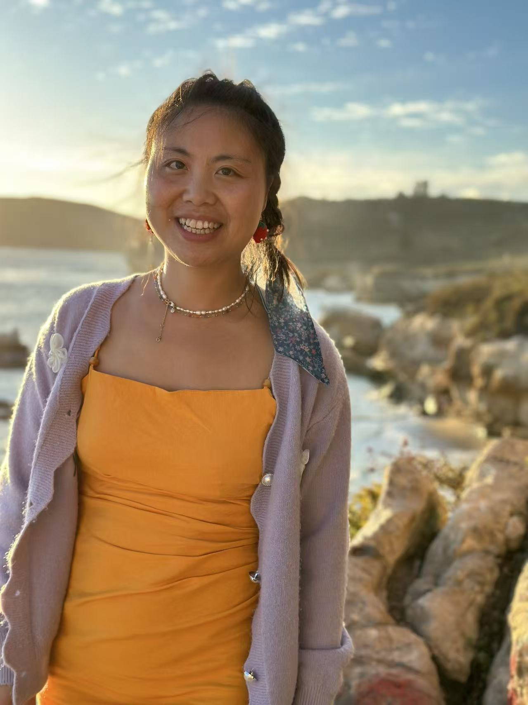

Ms. Yan Long holds an AMI Montessori Assistants to Infancy certification from Denver and an AMI Montessori Primary certification from Montessori Northwest. She earned her Bachelor's Degree in English and Spanish from Sichuan International Studies University in Chongqing, China.
Before joining Seedlings Montessori Lab, Ms. Yan had 6 years of experience as a lead teacher in a Montessori classroom and 11 years of experience in childcare and Mandarin tutoring. During the pandemic, she created a Mandarin Immersion Montessori pod in Redwood City, California, and she also spent a year as the lead Mandarin instructor at the Carnegie Library in Pittsburgh, Pennsylvania.
In her free time, Ms. Yan enjoys silk embroidery, gardening, hiking, arts and crafts, piano, yoga, swimming, exploring new foods, and visiting new places. She is also interested in philosophy and literature, with favorite thinkers including Zhuangzi, Maria Montessori, Piaget, and Jane Austen.